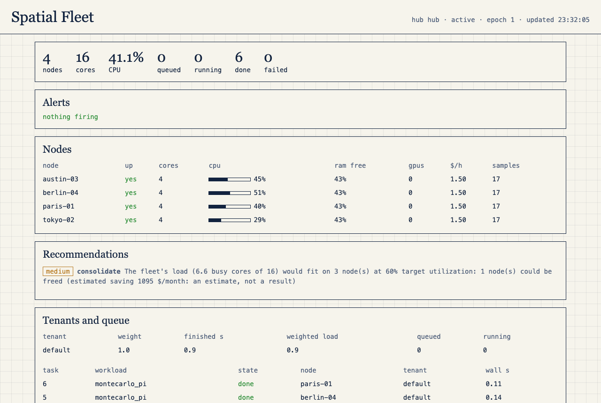

Compute infrastructure · v0.14.0 · open source
Run every job where it costs least.
Spatial Computing is the control layer for your compute infrastructure. It measures your machines, prices every way to run a job — CPU, GPU, a fleet, memory tiers, quantum — runs the cheapest one that stays correct, and records the estimate next to what really happened.
python3 -m venv .venv && source .venv/bin/activate pip install "spatial-computing[quantum]" spatial audit spatial status

Measured
Numbers from the repository, not slides.
Each figure comes from a test or benchmark you can run yourself with pytest and spatial bench all.
Measured on a 2017 MacBook Pro (2 cores, 16 GB) on 14–15 November 2026. Methods and conditions: Results.
What you get
One objective. Every engine.
Lower cost per job
One formula across every engine: the cheapest correct option within your deadline, memory and isolation limits, priced with the numbers you set.
More from the hardware you have
JIT and multi-core, a GPU when it pays, memory tiers that keep more data than RAM holds. The device is chosen by measurement, not by habit.
Infrastructure you can trust
Every decision is written to a tamper-evident ledger, every link is encrypted, and every estimate is compared with what happened and corrected.
The product
Everything you need to run compute at scale.
Planner
Ask once. See every option, priced.
Describe a job and your limits. The planner proposes every way to run it across engines, ranks them with one formula, explains each refusal, and records its estimate next to the real result.
- Compute, memory, runtime, quantum, AI and fleet options in one table
- Calibrated by history: estimates improve with each run
job: compute heat {'n': 100, 'steps': 600}
objective: minimize cost (0.134 $/h)
>> compute/numba 0.0106 s chosen
compute/numpy 0.0733 s ok
executed: 0.0114 s (estimated 0.0106 s, +8%)Fleet
See every machine. Place work where it fits.
An agent on each machine, a hub that sees them all. Work is placed by eligibility and load, shared fairly between teams, and recommendations come with their evidence.
- Fair share between tenants, all-or-nothing gangs, cache-affinity routing
- A read-only dashboard and alerts when a node goes quiet
node up cores cpu% ramfree%
agent-0 yes 4 48 43
agent-1 yes 4 50 43
agent-2 yes 4 52 43
fleet: 3 nodes, 12 cores,
CPU utilization 50.1%
(last 6 s)Accelerators
Write the kernel once. Run it on the cheapest device.
One source in a typed Python subset becomes CPU code, a Metal GPU kernel and CUDA and HIP source. The planner probes each device and picks the cheapest for your size.
- Integer kernels bit-identical on CPU and GPU
- Shared-memory reductions on the GPU
@kernel
def collatz(i: int, j: int, n: int, limit: int):
x = i * n + j + 1
k = 0
while x != 1 and k < limit:
if x % 2 == 0:
x = x // 2
else:
x = 3 * x + 1
k += 1
return k
collatz.run("metal", 1536, limit=2000) # 94 ms
collatz.run("cpu", 1536, limit=2000) # 597 ms
print(collatz.to_cuda_c()) # and CUDA C / HIP sourceInterconnect
Collectives between workers, algorithm chosen for you.
All-reduce and broadcast over encrypted links. A measured cost model picks ring, halving-doubling or tree for each message size and worker count.
- Exact sums, verified on every algorithm
- Calibrated per algorithm from your own measurements
from spatial.interconnect import launch, allreduce
def work(comm):
grad = local_gradient(comm.rank)
# ring, halving-doubling or tree:
# picked by a measured cost model
return allreduce(comm, grad, algo="auto")
launch(8, work) # 8 workers, encrypted linksOperations
Production-ready from the first hub.
State survives restarts, a standby hub takes over on its own, three or more hubs elect a leader by majority, and agents follow the active hub without configuration.
- Persistent queue and tenant history
- Local dashboard behind a random key, alerts with an optional webhook
$ spatial serve hub --name a --peer B:7700 --state-file a.json
$ spatial serve hub --name b --peer A:7700 --state-file b.json
$ spatial agent --hub A:7700,B:7700 --token-file node.tok
kill -9 on the active hub
-> a new active hub in 5.6 s
-> the queued task finishes on the survivor 6.7 s laterAnd the rest of the platform
Tiered memory
Work on data larger than RAM with a measured, priced latency trade-off.
Runtime
Run software built for another system — Linux micro-VM, WebAssembly, Wine — isolated, with the route explained.
SPATIAL Q
One language for classical, distributed and quantum steps; simulators, Qiskit Aer and IBM hardware.
AI
Reuse inference context instead of recomputing it, restored byte for byte.
Scientific and simulation
Numerical jobs checked against exact solutions; N-body energy drift under 0.1 %.
Holographic
Hologram synthesis and reconstruction, in focus on the emitted points.
Built for production
Secure, observable, recoverable.
Encrypted and authenticated
AES-256-GCM, forward-secret key exchange, scoped credentials with expiry, quotas and revocation.
Tamper-evident audit
Every decision and request goes into a hash-chained ledger you can verify.
High availability
Standby failover in seconds; majority election for three or more hubs.
Scale
1,000 agents on one hub, status in 36 ms, hub memory 109 MiB.
Hardware-neutral
CPU, Metal, CUDA and HIP generation, remote nodes: one job description, many devices.
Reproducible
Every claim has a test or benchmark. A weekly workflow re-checks them.
SPATIAL Q
A language for hybrid workflows.
Classical, distributed and quantum steps in one program. The orchestrator picks a backend from a resource estimate.
Learn more// Quantum only: Bell pair. Expect ~50% "00" and ~50% "11".
quantum bell() {
qubit q[2];
h q[0];
cx q[0], q[1];
}
main {
let counts = sample bell() shots 2000;
print "bell counts:", counts;
print "<ZZ> =", expect "ZZ" of bell();
}
$ spatial q run examples/01_bell.sq
bell counts: {'00': 989, '11': 1011}
<ZZ> = 0.9999999999999998Start in three minutes.
Install, run the audit, ask the planner. Open source under Apache-2.0.
Get started GitHubpython3 -m venv .venv && source .venv/bin/activate pip install "spatial-computing[quantum]" spatial audit spatial status
Open core
The core is open.
The CLI, planner, fleet, SPATIAL Q, runtime and tiered-memory library are published under Apache-2.0. Advanced placement and cost policies are developed in a private package.
Read the docs GitHub